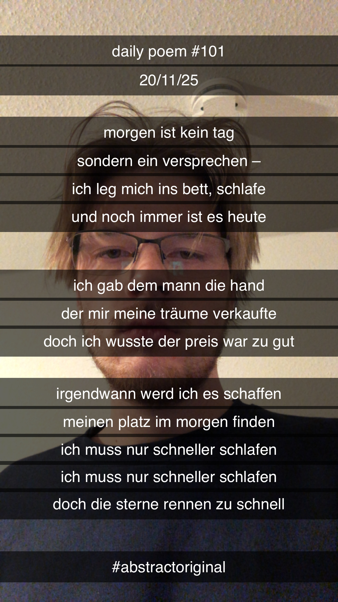

Morgen
Morgen ist kein Tag,
Sondern ein Versprechen –
Ich leg' mich in's Bett, schlafe,
Und noch immer ist es heute.
Ich gab dem Mann die Hand,
Der mir meine Träume verkaufte;
Doch ich wusste, der Preis war zu gut.
Irgendwann werd' ich es schaffen –
Meinen Platz im Morgen finden.
Ich muss nur schneller schlafen,
Ich muss nur schneller schlafen –
Doch die Sterne rennen zu schnell.
